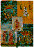

|

L'Associazione Culturale Zivido è nata nel luglio 1984 per iniziativa di alcuni cittadini residenti nel Comune di San Giuliano Milanese, Provincia di Milano, (Italia) con il proposito "... di studiare, far conoscere, difendere e promuovere l'Arte, la Storia, l'Architettura, l'Ambiente, gli Usi e Costumi presenti sul territorio comunale sangiulianese. Suo compito sarà di raccogliere documentazione, testimonianze ed oggetti; di ordinare il materiale, conservarlo e renderlo accessibile al pubblico. Promuoverà incontri, conferenze, dibattiti, studi, pubblicazioni ed ogni altra iniziativa conforme al presente Statuto...
L'Associazione collaborerà, di libera iniziativa, con tutte le Organizzazioni a lei similari ..." (Statuto, artt. 2-3) |
 |
 |
segnalazioni |
CASCINA SANTA BRERA - SAN GIULIANO MILANESE
MIGRANTI presso Cascina Santa Brera
L'Agriturismo è stato contattato dalla Prefettura di Milano per ospitare 6 migranti provenienti dall'Africa, richiedenti asilo politico in Italia. Sono quindi arrivati: Ahmed originario del Ciad, Alex, Abraham, Ahmed, Adamu e Amechi originari della Nigeria. Nonostante il mese di agosto, le istituzioni e le associazioni presenti sul territorio si sono subito attivate, ma poi è arrivato il ferragosto. Ogni iniziativa di singoli e associazioni per aiutare queste persone a conoscere la lingua italiana sarà ben accetta.
|
TUTTO AGOSTO: VENDITA DIRETTA PRODOTTI BIOLOGICI A KM ZERO
Presso la Cascina Santa Brera di San Giuliano Milanese è aperto uno Spaccio Agricolo il mercoledì e il venerdì dalle 16 alle 20, il sabato dalle 10 alle 18. Su appuntamento, si apre anche in altri orari (tel. 348 7329417). |
dal 20 al 26 agosto: SETTIMANA VERDE PER TUTTI
(anche residenziale per chi desidera) - orticoltura e preparazione conserve. Alla mattina nell'orto e al pomeriggio imparare a riconoscere le erbe spontanee, a fare le conserve (salsa al prezzemolo, salsa di pomodoro, marmellate di more, di fichi, zucchine, lamponi...) e il pane a lievitazione naturale.
E' possibile frequentare entrambi i corsi oppure solo mezza giornata
con Anna Morera Perez e Patricia Figueiredo
http://www. scuoladipratichesos tenibili. it/settimanaverde. html |
PORTE APERTE E ADOTTA UN ORTO
domenica 21 agosto alle ore 10,30 visita guidata alla cascina e alle sue attività con la possibilità di aderire al progetto "adotta un orto". E' possibile fermarsi anche per uno spuntino (15 euro) con le verdure dell'orto e i prodotti della cascina, prenotando al tel. 348 2627530. |
LE BUONE PRATICHE CASALINGHE
20-26 agosto - Laboratorio di trasformazione frutta e verdura per le conserve di stagione - con Patricia Figueiredo
10-11 settembre - Laboratorio di caseificazione (fare il formaggio) - con Lorenzo Bruschi
2 ottobre - Laboratorio di panificazione a lievitazione naturale (pasta madre) - con Catia Masiero
15-16 ottobre - Autoproduzione di saponi e cosmetici - con Francesca Moccia e Lorena Mariani |
CORSI PER GLI APPASSIONATI DEL VERDE
20-26 agosto - settimana verde con orticoltura e trasformazione prodotti - alla mattina il corso di orticoltura pratica per principianti con Anna Morera Perez
dal 10 settembre al 1 ottobre - Incontri di orticoltura biologica pratica per principianti - con Anna Morera Perez |
AUTOCOSTRUZIONE E BIOEDILIZIA
26-27 settembre - Laboratorio di intonaco con la calce e la terra cruda - le finiture (decorare, impermeabilizzare, risolvere i problemi più comuni) - con Paolo D'Alpaos
|
INIZIATIVE PER BAMBINE E BAMBINI
campi estivi (anche residenziali): dal 30 agosto al 3 settembre, dal 6 al 10 settembre
Per info: tel. 335 - 7745510
http://www. scuoladipratichesos tenibili. it/campiestivi.html
http://www.praticareilfuturo. i t |
PROGETTI PER LE SCUOLE
Cicli di incontri sull'orticoltura; la cura degli animali; la realizzazione di piccoli progetti di permacultura; il riciclo; la costruzione di giocattoli con materiali naturali e riciclati; i giochi e le fiabe di altri paesi del mondo; la produzione di pane, burro e marmellate; le erbe spontanee; il consumo critico; l'energia.
Programmi e proposte da scaricare alla pagina: http://www. scuoladipratichesos tenibili. it/perlescuole.html
http://www.praticareilfuturo. i t |
DOPOSCUOLA IN FATTORIA
La Cascina Santa Brera propone un doposcuola per le/i ragazzine/i degli ultimi anni delle elementari e delle medie, dalle ore 13,30 alle ore 18,30 circa.
Attività previste: assistenza per i compiti e aiuto nello studio (anche con proposte di didattica attiva, per esempio piccoli esperimenti scientifici), giochi ed escursioni, laboratori creativi e di autoproduzione, attività nell'orto e con gli animali, piccoli progetti permaculturali, giochi e altre attività sulla permacultura, il consumo critico e gli stili di vita sostenibili. L'obiettivo è educare all'autonomia, alla responsabilità e alla cooperazione, stimolando le potenzialità autoeducative del gruppo, con particolare attenzione alla maturazione emotiva e relazionale.
Contattare Sandra Cangemi: bambini@cascinasantabrera.it - tel. 335-7745510 http://www.praticareilfuturo. i t |
ARCHIVIO DI STATO - MILANO
dal giorno 15 giugno 2004 questo Istituto ha aperto all'utenza il servizio di consultazione dell'Archivio digitale. (informazioni) |
|
|
|  |
Azienda di Servizi
alla Persona
Golgi - Redaelli
(ex Amm. II.PP.A.B.
Milano) |
|